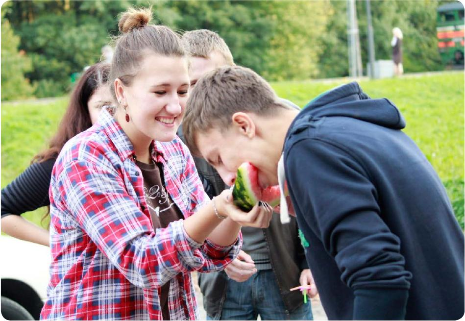

Date: Oct 10, 2013
Посвятили так посвятили!Как прошло посвящение в студенты!

18 Сентября на РФиКТ прошло развлекательное мероприятие для первокурсников (хотя свою долю фана получили и другие курсы) под названием «Схватка». Проводилась она после годового перерыва, что привело к практически не скрываемой забавной зависти в глазах второго курса. Первоочередной целью «Схватки» было объединение и сплочение в дружный коллектив новичков на факультете, что было видно в каждом испытании и конкурсе, от «первачей» требовалась слаженная командная работа и умение превратить группу в единое целое для быстрого и качественного выполнения задач.
Это было видно сразу, ведь даже первое задание отлично показало уровень сплоченности людей: связать веревку семи метров из собственной одежды – задача не из простых. В этом же духе были и остальные, не менее веселые, точки и трудности. Отдельного упоминания заслуживают «ложные» агенты в торговых центрах. Несчастные участники натыкались либо на специально поставленных подставных, либо просто на случайных людей, что, однако, добавило свою долю интереса и интриги: а вдруг тот парень который заставил вас носить мешки с цементом - подставной агент!? Но и остальные выдумки организаторов тоже были интересны и не менее заковыристы: попробуйте найти по фотографии лавочку возле биологического факультета, учитывая, что сфотографирована она с совершенно безумного ракурса. И если команды со стартовой площадки убегали без энтузиазма, и у многих на лицах было желание, чтобы это все быстрее кончилось, то к финишу участники прибегали, может, и с подуставшими, но определенно счастливыми лицами. Правда, как оказалось, именно после этого все только начиналось. Первые прибежавшие команды, а таких было две, сразу же получили весьма безумные, но невероятно зрелищные для зрителей желания от ведущих. Дальше пошли всевозможные эстафеты, совместные поедания арбуза, парные лопанья шариков, задания на скорость и прочие забавности, доводящие людей, наблюдавших это, до истерики, а также вызывающие желание во всем этом безобразии принять лично участие, но было уже поздно!
Подводя итоги можно сказать, что в это году организаторам удалось достичь своей цели, за что им отдельное спасибо. Очередной этап посвящения в «Рафы» получился интересным и запоминающимся.
P.S. я уверен вам интересно, кто же по итогу выиграл, так вот, победила та самая дружба, триумфаторами были объявлены все участвующие команды, что, в принципе, и правильно, ведь это вещь из разряда где действительно не важна победа. Главное – участие.